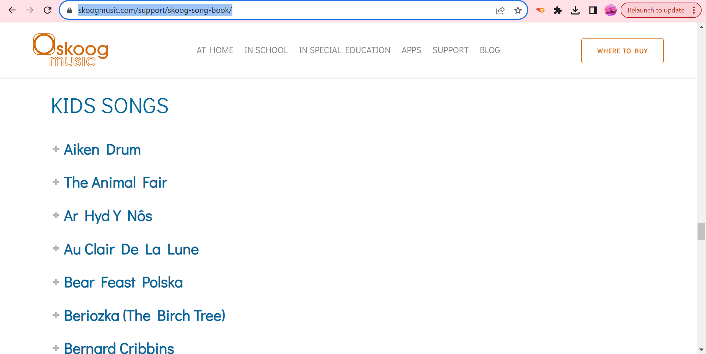

The Challenge - Skoog: Remix a Song
 The Challenge
The Challenge
Your challenge is to use Skoog to explore notes, beats and time sigature. Then, choose a song and remix it by changing its time signatures. You will use fractions and whole numbers to represent notes and remix it. You’ll rewrite it using Skoog notation.

What I'll Learn
- I CAN use Skoog to remix a song.
- I CAN count beats as whole numbers and fractions.
- I CAN use decimal notation for fractions.
- I CAN multiply fractions by whole numbers.
- I CAN add fractions with like and unlike denominators.